Execute the following code block to import all necessary packages.
Code
import osimport pickleimport numpy as npimport matplotlib.pyplot as pltfrom ipywidgets import interactfrom keras import models, layers# from keras import backend as Kfrom tensorflow.keras.preprocessing.image import ImageDataGeneratorfrom tensorflow.keras import optimizersfrom tensorflow.keras.utils import get_filefrom keras.utils import to_categorical, load_img, img_to_array, array_to_imgfrom keras.applications import VGG16, xceptionfrom urllib.request import urlopenbase_url = ("https://raw.githubusercontent.com/ming-zhao/ming-zhao.github.io""/master/AIML_for_Business")
Introduction to Convnet
Convolutional neural networks, or convnets, are widely used in computer vision because they can handle various transformations of the inputs. This is important for vision tasks. For example, even if you see an upside-down picture of a cat, you can still recognize it as a cat.
The main difference between densely connected layers and convolution layers is that dense layers learn global patterns in their input feature space (e.g., for a MNIST digit, patterns involving all pixels), while convolution layers learn local patterns.
Convnets have two cool features:
They learn translation-invariant patterns. Convnets can recognize patterns anywhere in an image after learning them in one part. For example, if a convnet learns to identify a cat’s ear in one corner of a picture, it can recognize the ear even if it appears in a different spot. This is different from densely connected networks, which would need to relearn the pattern in each new location. This property is useful because objects in the real world can appear anywhere in an image, so convnets need fewer examples to learn how to recognize them.
They can learn spatial hierarchies of patterns. Convnets can learn complex patterns by building on simpler ones. For example, the first layer of a convnet might learn to detect edges, the next layer might combine those edges to recognize shapes like eyes or noses, and further layers might combine those shapes to recognize faces. This helps convnets understand and interpret images more effectively because the visual world is organized in layers of increasing complexity.
Next, we will use a convnet to classify MNIST digits. We previously performed this task using a densely connected network, which achieved a test accuracy of approximately 97.8%. However, even though the convnet we will use is basic, its accuracy will far surpass that of the densely connected model.
Our model architecture is designed to classify images into 10 categories (digits 0 to 9). It consists of the following components:
Convolutional Layers: Multiple Conv2D layers are stacked iteratively to learn hierarchical features from images.
Pooling Layers: MaxPooling2D layers are used to reduce the spatial dimensions and retain the most important features.
Flatten Layer: A Flatten layer is added to convert the resulting matrix data from the convolutional and pooling layers into a single array. This array is intended to capture all the essential information from the image.
Dense Layers: A densely connected neural network (fully connected layers) is then used to perform classification based on the features extracted by the previous layers.
Output Layer: Since we have 10 categories to classify (digits 0 to 9), the final layer consists of 10 units with a softmax activation function. This layer outputs a probability distribution over the 10 categories, indicating the likelihood of the input image belonging to each category.
We will examine Conv2D and MaxPooling2D layers in more details later.
The model improvement is about (98.33-97.8)/(100-97.8)% = 24%.
Convolution
The Conv2D layer uses the convolution operation, which is explained in the following figure.
Figure 1: Convolution
In the example of Figure 1, the input image has a size of 6x6, and the weight of the layer (called the kernel or filter) is 3x3 with a bias of 0. By sliding a 3x3 region over the input, we generate an output of size 4x4. Specifically, the first output element, -9, is calculated using the element-wise sum-product formula on the top-left 3x3 matrix of the input and the filter as follows:
Recall the deep neural network model for MNIST introduced earlier:
model = models.Sequential(name='mnist_simple') model.add(layers.Input(shape=(28*28,))) model.add(layers.Dense(512, activation='relu')) model.add(layers.Dense(10, activation='softmax'))
In the first dense layer, we create 512 filters, each with a size of 28x28. Since each filter has the same size as the input image, we have visualized them as heatmap figures earlier. Each filter is compared to the entire input image, meaning dense layers can only learn global patterns. In other words, they process the input image as a whole, capturing overall features rather than localized details.
However, the Conv2D layer, used in the following code snippet:
uses 32 filters, each of size 3x3, that slide along the input image to capture local patterns. As these filters move across the input image, the convnet can learn translation-invariant patterns.
padding
Note that using a filter will shrink the output dimension. In the previous example, the filter reduced the 6x6 input to a 4x4 output (in general a k\times k filter will reduce the input size by k-1). If we want to maintain the same spatial dimensions for the output feature map as the input, we can add an appropriate number of rows and columns on each side of the input feature map with 0 values (see the diagram below). This is known as padding, as illustrated in the following figure.
Note that the first output value is now -3, since the top-left 3x3 matrix of the input is after padding:
\begin{pmatrix}
0 & 0 & 0\\
0 & 0 & 0\\
0 & 0 & 3\\
\end{pmatrix}
The following code demonstrates how the convolution operation can detect edges in an image. We set the filter as:
For every pixel in the image, the filter multiplies it by 1 and subtracts 0.125 of all the surrounding pixel values. This way, the maximum effect is observed at the edges, where there is a stark difference between the pixel value and its surroundings. In any other region, the effect will be canceled out as the filter overall sums to 0.
Code
from skimage.color import rgb2grayfrom skimage.transform import resizefrom scipy.signal import convolve2dimage = resize(plt.imread(urlopen(os.path.join(base_url, "figure/cat.jpg")), format='jpg'), (200,200))plt.figure(figsize=(15,8))# plot the original imageplt.subplot(1,3,1)plt.title('color original', fontsize=10)plt.axis('off')plt.imshow(image)# plot the gray imagegray_img = rgb2gray(image)plt.subplot(1,3,2)plt.title('gray image', fontsize=10)plt.axis('off')plt.imshow(gray_img, cmap='gray')# create and print filterflt =-np.ones((3,3))/8flt[1,1] =1print('Filter:')display(flt)# plot the filtered imageflt_img = convolve2d(gray_img, flt, boundary='symm', mode='same')plt.subplot(1,3,3)flt_img = np.maximum(0, flt_img)plt.title('filtered image', fontsize=10)plt.imshow(flt_img, cmap='gray')plt.axis('off')plt.show()
The above code block contains three components. First, it plots the original color image. Then, it modifies the image to grayscale, making it easier to to detect edges. After applying the convolution procedure (as illustrated in Figure 1) using the code snippet
we plot the filtered image that highlights the edges.
stride
The convolution procedure is very flexible. In Figure 1, the red region selected from the input slides with a step size of 1. In fact, the step size of sliding a filter is a parameter of the convolution called its stride. In the graph below, the stride is 2 because we slide the filter over the input by 2 tiles.
Figure 2: Stride
Using a stride of 2 means the width and height of the feature map are downsampled by a factor of 2. However, strided convolutions are rarely used in practice. To downsample feature maps, we typically use the max-pooling operation instead of strides.
Max Pooling
The role of max pooling is to aggressively downsample the input image. The code snippet in the example
model.add(layers.MaxPooling2D((2, 2)))
shows that, before the first MaxPooling2D layer, the feature map is 26 × 26, but after the max-pooling operation, it is halved to 13 × 13. It works as illustrated in the following figure.
Figure 3: Maxpooling
The pooling operation reduces the output size of the convolutional layer. This reduces the number of parameters in the network, which in turn reduces the risk of overfitting.
The max operation selects the maximum value in each subregion of the input, providing the following benefits:
Translation invariance: the output of the operation remains the same even if the input image is shifted slightly. This property makes the network more robust to changes in the position of objects in the input image.
Feature learning: the max value helps in identifying the most important features of an image by selecting the strongest feature present in each subregion. This highlights important features of the input image and allows the network to learn more effective representations of the data.
what if without maxpooling
Let’s consider the option without max pooling layers:
from keras import models, layersmodel_no_max_pool = models.Sequential()model_no_max_pool.add(layers.Conv2D(32, (3, 3), activation='relu', input_shape=(28, 28, 1)))model_no_max_pool.add(layers.Conv2D(64, (3, 3), activation='relu'))model_no_max_pool.add(layers.Conv2D(64, (3, 3), activation='relu'))model_no_max_pool.summary()
The summary of the model is as follows:
Layer (type)
Output Shape
Param #
conv2d_1 (Conv2D)
(None, 26, 26, 32)
320
conv2d_2 (Conv2D)
(None, 24, 24, 64)
18496
conv2d_3 (Conv2D)
(None, 22, 22, 64)
36928
Total params: 55,744
Trainable params: 55,744
Non-trainable params: 0
Here, None in the output shape represents the batch size, which is the number of input images processed at a time.
Figure 4 shows how these three Conv2D layers work.
Figure 4: without maxpooling
The red arrows illustrate how the Conv2D layers downsample the input by converting a region bounded by a red rectangle into a single value through the filter (or weights of the layer). The figure shows that after three Conv2D layers, a 7x7 window of input is converted to a single value. This single value is then used to classify the digit in the image. However, it is impossible to recognize a digit by only looking at it through windows that are 7x7 pixels. We need the features from the last convolution layer to contain information about the entirety of the input.
The final output has 22 \times 22 \times 64 = 30,976 elements per sample. If we were to flatten it and then add a Dense layer of size 64 on top, that layer would have about (30,976 \times 64 \approx) 15.8 million parameters. This is far too large for such a small model and would result in overfitting.
In summary, the reasons for using downsampling are to:
Induce spatial-filter hierarchies by making successive convolution layers look at increasingly large windows of input.
Reduce the number of parameters to avoid overfitting.
Dogs vs. Cats
In this section, we will use a Convolutional Neural Network (CNN) to distinguish between images of dogs and cats.
To get started, you can download the training and validation data by executing the following code block. This dataset contains images of dogs and cats, which we will use to train and validate our CNN model.
Code
# download training and validation data to current folderfrom urllib.request import urlretrieveimport zipfile# url = base + "/data/dogs-vs-cats_small.zip?raw=true"filename ="dogs-vs-cats_small.zip"# Download the fileurlretrieve(os.path.join(base_url, "data/dogs-vs-cats_small.zip?raw=true"), filename)# Extract the contents of the zip filewith zipfile.ZipFile(filename, 'r') as zip_ref: zip_ref.extractall('.')
The dataset contains 2,000 training pictures (1,000 cats and 1,000 dogs) and 1,000 validation pictures (500 cats and 500 dogs). We will construct a small CNN to distinguish between images of dogs and cats.
Before we start building our neural network models, we will introduce two functions:
validation_plot, which will plot the training accuracy versus validation accuracy.
plot_test_images, which will show the performance of the model on 20 test pictures (10 cats and 10 dogs).
Code
def validation_plot(history): acc = history['acc'] val_acc = history['val_acc'] loss = history['loss'] val_loss = history['val_loss'] epochs =range(len(acc)) plt.figure(figsize=(6, 4))# plt.subplot(1, 2, 1) plt.plot(epochs, acc, 'bo', label='Training') plt.plot(epochs, val_acc, 'r', label='Validation') plt.title('Training and validation accuracy')# plt.subplot(1, 2, 2)# plt.plot(epochs, loss, 'bo', label='Training')# plt.plot(epochs, val_loss, 'r', label='Validation')# plt.title('Training and validation loss') plt.legend(bbox_to_anchor=(1.02, 0.2), loc=2, borderaxespad=0.5) plt.show()def plot_test_images(model): fig, axs = plt.subplots(nrows=2, ncols=10, figsize=(20, 5))# URLs of cat and dog images cat_urls = [os.path.join(base_url, "data/dogs-vs-cats_small_test/cat.{}.jpg?raw=true".format(i)) for i inrange(1500, 1510)] dog_urls = [os.path.join(base_url, "data/dogs-vs-cats_small_test/dog.{}.jpg?raw=true".format(i)) for i inrange(1500, 1510)]# Loop over cat and dog images and plot them in corresponding rowsfor i, urls inenumerate([cat_urls, dog_urls]):for j, url inenumerate(urls):# Load the image from URL img = load_img(get_file(f"cats_and_dogs_small_test{i}{j}.jpg", origin=url), target_size=(150, 150))# Convert the image to a numpy array # Normalize the image img_array = img_to_array(img) /255# Reshape the array and make a prediction img_array = img_array.reshape((1,) + img_array.shape) prediction = model.predict(img_array, verbose=0)# Plot the image and predicted class axs[i, j].imshow(img) axs[i, j].axis('off')if prediction <0.5: axs[i, j].set_title('Cat')else: axs[i, j].set_title('Dog')# Show the plot plt.show()
First Model
We often heard that deep learning requires lots of data. While it is partially true that deep learning requires lots of data, one fundamental characteristic of deep learning is its ability to identify interesting features in the training data on its own. This is especially beneficial for complex input samples, such as images. However, what constitutes lots of samples is relative to the size of the network being trained.
Convolutional neural networks (convnets) are highly efficient at learning local, translation-invariant features, which makes them highly data efficient for perceptual problems. Even with a small image dataset, training a convnet from scratch can yield reasonable results.
Our first model architecture is similar to the previous model used for classifying MNIST data.
Code
def build_model():# # # # # # # # # # # # # # # # # # # # # # # # # # # # # # # # # # # # # # # # # # # train_dir ='./dogs-vs-cats_small/train' validation_dir ='./dogs-vs-cats_small/validation'# build data generator# that can automatically turn image files into batches of preprocessed tensors train_datagen = ImageDataGenerator(rescale=1./255) train_generator = train_datagen.flow_from_directory(# This is the target directory train_dir,# All images will be resized to 150x150 target_size=(150, 150), batch_size=20,# Since we use binary_crossentropy loss, we need binary labels class_mode='binary') validation_datagen = ImageDataGenerator(rescale=1./255) validation_generator = validation_datagen.flow_from_directory( validation_dir, target_size=(150, 150), batch_size=20, class_mode='binary')# build model model = models.Sequential() model.add(layers.Input((150, 150, 3))) model.add(layers.Conv2D(32, (3, 3), activation='relu')) model.add(layers.MaxPooling2D((2, 2))) model.add(layers.Conv2D(64, (3, 3), activation='relu')) model.add(layers.MaxPooling2D((2, 2))) model.add(layers.Conv2D(128, (3, 3), activation='relu')) model.add(layers.MaxPooling2D((2, 2))) model.add(layers.Conv2D(128, (3, 3), activation='relu')) model.add(layers.MaxPooling2D((2, 2))) model.add(layers.Flatten()) model.add(layers.Dense(512, activation='relu')) model.add(layers.Dense(1, activation='sigmoid')) model.compile(loss='binary_crossentropy', optimizer=optimizers.RMSprop(learning_rate=1e-4), metrics=['acc']) model.save('./cats_and_dogs_small_1.keras', include_optimizer=False)# fit model and get validation information history = model.fit(train_generator, validation_data=validation_generator, epochs=30, batch_size=20)withopen('./history_cats_and_dogs_small_1.pkl', 'wb') as f: pickle.dump(history.history, f) history = history.historyreturn model, history# model, history = build_model()model = models.load_model(get_file(origin = os.path.join(base_url, 'model/cats_and_dogs_small_1.keras')))history = pickle.loads(urlopen(os.path.join(base_url, "model/history_cats_and_dogs_small_1.pkl")).read())model.summary()validation_plot(history) plot_test_images(model)
The accuracy plot highlights the problem of overfitting. The training accuracy increases over time, eventually reaching nearly 100%, while the validation accuracy stalls at a much lower percentage, around 72%.
For the 20 testing images shown, although the resulting model can somewhat distinguish between dogs and cats, it still makes quite a few mistakes.
Overfitting is a significant concern since we only have 2,000 training samples. This issue arises because having too few samples makes it difficult to train a model that can generalize to new data. To mitigate this problem, we will use data augmentation, a technique specific to computer vision that is almost universally applied when processing images with deep-learning models.
Data augmentation involves creating modified versions of the existing images in the training set by applying random transformations such as rotations, translations, and flips. This helps to artificially increase the size of the training set and improve the model’s ability to generalize by exposing it to a wider variety of image variations.
Data Augmentation
Data augmentation is a technique that generates additional training data from existing samples by applying a number of random transformations to create believable variations of the images.
This time, ImageDataGenerator is configured with the following parameters: rotation_range=40, width_shift_range=0.2, height_shift_range=0.2, shear_range=0.2, and zoom_range=0.2. These parameters introduce random transformations, unlike before, where we do not use any those parameters and hence use only the original images. Now, the code can generate random variations of the original images within the specified ranges.
The following code block demonstrates the augmented images:
Code
train_dir ='./dogs-vs-cats_small/train'train_datagen = ImageDataGenerator( rescale=1./255, rotation_range=40, width_shift_range=0.2, height_shift_range=0.2, shear_range=0.2, zoom_range=0.2, horizontal_flip=True, fill_mode='nearest')index =952# We pick one image to "augment"img_path = os.path.join(train_dir, 'cats', f"cat.{952}.jpg")print("Original Image:")display(load_img(img_path, target_size=(150, 150)))# Read the image and resize it# Convert it to a Numpy array with shape (150, 150, 3)x = img_to_array(load_img(img_path, target_size=(150, 150)))# Reshape it to (1, 150, 150, 3)x = x.reshape((1,) + x.shape)fig = plt.figure(figsize=(10,5))# The .flow() command below generates batches of randomly transformed images.# It will loop indefinitely, so we need to `break` the loop at some point!print("Data Augmentation:")for i, batch inenumerate(train_datagen.flow(x, batch_size=1)): plt.subplot(2, 3, i+1) plt.axis('off') plt.imshow(array_to_img(batch[0]))if i==5:breakplt.show()
Original Image:
Data Augmentation:
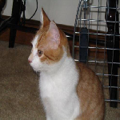
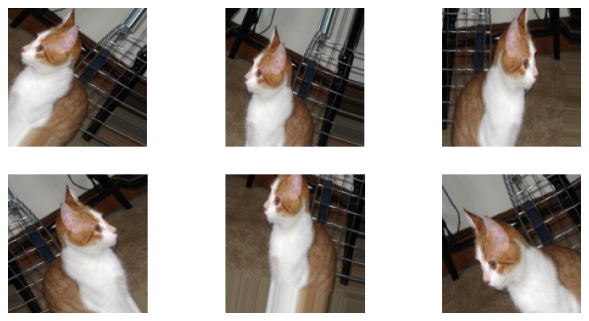
With this data-augmentation configuration, the network will now be exposed to many new training inputs.
However, since the augmented samples are based on a limited number of original images and created by remixing existing information, data augmentation alone may not be sufficient to eliminate overfitting. Therefore, a Dropout layer will be added to the model just before the densely connected classifier to further address this issue.
We can clearly see the model improvement from both the validation accuracy and the results on the testing images.
In the training and validation accuracy plot, both accuracies increase as the training progresses. The fact that both accuracies increase together indicates that the overfitting issue has been largely mitigated. The validation accuracy has increased to about 80%.
Additionally, the model makes much fewer errors when predicting the test images compared to before.
Pretrained
One of the benefits of deep learning models is their high degree of reusability. For example, an image-classification or speech-to-text model trained on a large-scale dataset can be adapted to a significantly different problem with only minor adjustments.
There are numerous pretrained models in computer vision publicly available for download, typically trained on the ImageNet dataset.
Next, we will use the VGG16 model, which has about 15 million parameters, to tackle our problem. Here is a summary of the VGG16 model:
weights indicates that we are using weights trained on the ImageNet dataset
include_top argument determines whether or not to include the densely connected classifier on top of the network. By default, this classifier includes the 1,000 classes from ImageNet. Since we will be using our own classifier with only two classes (cat and dog), we don’t need to include it.
input_shape argument specifies the shape of the image tensors that will be fed to the network. when include_top=True, the network input needs to have shape (224, 224, 3). When include_top=False, this argument is optional, and if not specified, the network will be able to process inputs of any size. we set it to (150,150,3), which is the shape of our input image.
Next, we use the convolutional base of VGG16 and add our own dense layers as a classifier as follows:
model = models.Sequential()model.add(conv_base)model.add(layers.Flatten())model.add(layers.Dense(256, activation='relu'))model.add(layers.Dense(1, activation='sigmoid'))
We will freeze the conv_base layer, which means that its weights will not be updated during training,
conv_base.trainable =False
and we only tune the classifier using our cat and dog image dataset.
Code
def build_model(): train_dir ='./dogs-vs-cats_small/train' validation_dir ='./dogs-vs-cats_small/validation' train_datagen = ImageDataGenerator(rescale=1./255, rotation_range=40, width_shift_range=0.2, height_shift_range=0.2, shear_range=0.2, zoom_range=0.2, horizontal_flip=True, fill_mode='nearest') train_generator = train_datagen.flow_from_directory(train_dir, target_size=(150, 150), batch_size=20, class_mode='binary')# Note that the validation data should not be augmented! validation_datagen = ImageDataGenerator(rescale=1./255) validation_generator = validation_datagen.flow_from_directory(validation_dir, target_size=(150, 150), batch_size=20, class_mode='binary') conv_base = VGG16(weights='imagenet', include_top=False, input_shape=(150, 150, 3)) conv_base.trainable =False img_input = layers.Input(shape=(150, 150, 3)) x = conv_base(img_input) x = layers.Flatten()(x) x = layers.Dense(256, activation='relu')(x) x = layers.Dense(1, activation='sigmoid')(x) model = models.Model(img_input, x) model.compile(loss='binary_crossentropy', optimizer=optimizers.RMSprop(learning_rate=1e-4), metrics=['acc']) history = model.fit(train_generator, epochs=100, validation_data=validation_generator) history = history.history model.save('./cats_and_dogs_small_3.keras')withopen('./history_cats_and_dogs_small_3.pkl', 'wb') as f: pickle.dump(history, f)return model, history# model, history = build_model()model = models.load_model("./model/cats_and_dogs_small_3.keras")# model = models.load_model(get_file(origin=os.path.join(base_url, "model/cats_and_dogs_small_3.keras")))history = pickle.loads(urlopen(os.path.join(base_url, "model/history_cats_and_dogs_small_3.pkl")).read())model.summary()validation_plot(history)plot_test_images(model)# K.clear_session()
We see that the validation accuracy has increased to 90%, and all 20 testing images are predicted correctly. This is not surprising because VGG16 is a much larger and more powerful ConvNet than what we had before.
fine-tune
We can further fine-tune the network by unfreezing a few of the layers of the VGG16 model so that it can be slightly adjusted for our purpose.
The steps for fine-tuning a network are as follows:
Add your custom network on top of an already-trained base network.
Freeze the base network.
Train the part you added.
Unfreeze some layers in the base network.
Jointly train both these layers and the part you added.
We have already completed the first three steps. For example, we can add the following code to fine-tune the last block of convolutional layers of the VGG16 model
conv_base.trainable =Truefor layer in conv_base.layers:if layer.name in {'block5_conv1','block5_conv2','block5_conv3'}: layer.trainable =Trueelse: layer.trainable =False
(block5_conv1,block5_conv2,block5_conv3 are layer names in Figure 5)
You might be wondering why we chose to fine-tune the last block of layers instead of the first block of layers, or why we didn’t fine-tune the whole model or more layers.
The answer to the first question will be addressed later when we visualize the Convenet. As for the second question, training more parameters increases the risk of overfitting. With 15 million parameters, it would be risky to attempt to train the entire convolutional base on our small dataset.
Visualizing Convnets
It is commonly said that deep learning models are black boxes because they learn complex representations that are difficult to interpret and present in a human-readable form. However, the representations learned by convolutional neural networks (convnets) are highly amenable to visualization, mainly because they are representations of visual concepts.
Intermediate Outputs
Visualizing intermediate outputs, also known as activations (the output of the activation function), can help us understand how information flows through a neural network and how it makes decisions based on a given input image.
A deep neural network can be seen as an information distillation pipeline. The raw data is transformed repeatedly, filtering out irrelevant information such as specific visual appearance of the image, and useful information is magnified and refined.
It’s important to note that the intermediate outputs of an input image are not a single image but rather a set of images, where each image relates a feature learned by that layer. Therefore, all the images in the outputs of a convolutional layer are called feature maps. To illustrate this, we can visualize the intermediate outputs of the convolutional layers for a test image, like cat.1502.jpg, using the model trained with data augmentation.
Code
def show_conv_output(layer_name): url = os.path.join(base_url, "data/dogs-vs-cats_small_test/cat.{}.jpg?raw=true".format(1502)) img = load_img(get_file(origin=url), target_size=(150, 150)) img_tensor = np.expand_dims(img_to_array(img), axis=0) img_tensor /=255. layer_outputs = [layer.output for layer in model.layers] activation_model = models.Model(inputs=model.inputs, outputs=layer_outputs) activations = activation_model.predict(img_tensor, verbose =0) layer_names = [layer.name for layer in model.layers[:8]] images_per_row =16 layer_activation = activations[layer_names.index(layer_name)]# This is the number of features in the feature map n_features = layer_activation.shape[-1]# The feature map has shape (1, size, size, n_features) size = layer_activation.shape[1]# We will tile the activation channels in this matrix n_cols = n_features // images_per_row display_grid = np.zeros((size * n_cols, images_per_row * size))# We'll tile each filter into this big horizontal gridfor col inrange(n_cols):for row inrange(images_per_row): channel_image = layer_activation[0, :, :, col * images_per_row + row]# Post-process the feature to make it visually palatable channel_image -= channel_image.mean()if channel_image.std()>0: channel_image /= channel_image.std() channel_image *=64 channel_image +=128 channel_image = np.clip(channel_image, 0, 255).astype('uint8') display_grid[col * size : (col +1) * size, row * size : (row +1) * size] = channel_image# Display the grid scale =1./ size plt.figure(figsize=(scale * display_grid.shape[1]/0.9, scale * display_grid.shape[0])) plt.title(layer_name) plt.grid(False) plt.imshow(display_grid, aspect='auto', cmap='viridis') plt.colorbar(pad=0.01) plt.show()
Code
url = os.path.join(base_url, "data/dogs-vs-cats_small_test/cat.{}.jpg?raw=true".format(1502))img = load_img(get_file(origin=url), target_size=(150, 150))img_tensor = np.expand_dims(img_to_array(img), axis=0)img_tensor /=255.plt.figure(figsize=(3, 3))plt.imshow(img_tensor[0])plt.title('original')plt.axis('off')plt.show()model = models.load_model(get_file(origin=os.path.join(base_url, 'model/cats_and_dogs_small_2.keras')))layer_names = [layer.name for layer in model.layers if'conv'in layer.name]# interact(show_conv_output, layer_name=layer_names);for layer_name in layer_names: show_conv_output(layer_name)
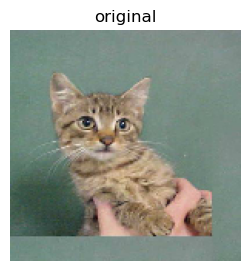
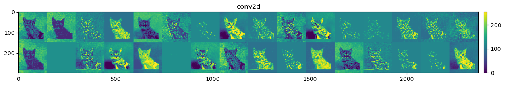
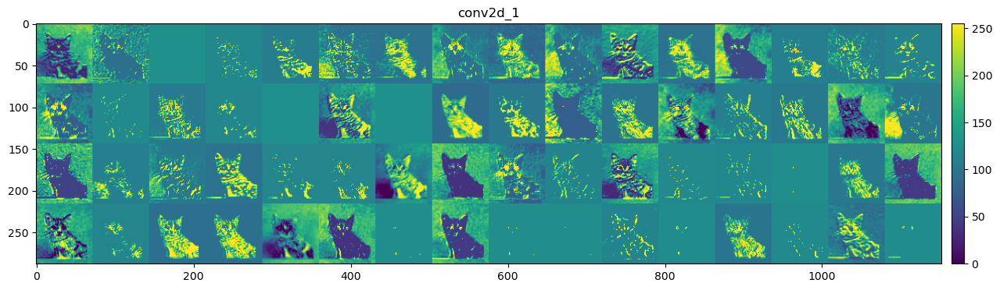
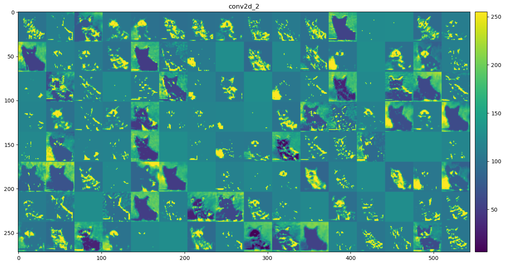
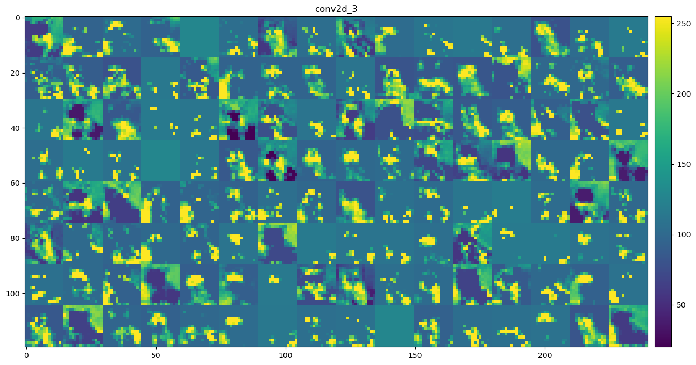
By examining the intermediate convolutional layer output, we can now answer the question we left earlier: why do we choose to fine-tune the last block of layers instead of the first block of layers?
The figure above shows roughly how the ConvNet recognizes the input image as a cat by processing it through each layer and finally categorizing it correctly.
As illustrated, we can describe the information learned by the first convolutional layer as the difference between the input image and the outputs of the first convolutional layer:
\begin{align*}
\text{Info learned by first conv-layer} = \text{Input image} - \text{Outputs of first conv-layer}
\end{align*}
These outputs are then passed on as inputs to the rest of the neural network. Even if we use these first-layer outputs instead of the original input image, the network can still accurately classify the image as a cat. This is because the first convolutional layer tends to learn generic and simple features, such as edges and textures, which are useful for many other computer vision tasks, such as distinguishing between cats and tigers.
In contrast, the outputs of the last convolutional layer are the inputs to the densely connected classifier. Regardless of the input images or intermediate layers, as long as similar outputs are sent to the densely connected classifier, the image will be classified as a cat. This indicates that later layers in the convolutional base learn more complex and task-specific features. By fine-tuning these task-specific features, the pre-trained model can be adapted to a new task without overfitting.
However, fine-tuning earlier layers can lead to overfitting because these layers have already learned generic features that are useful for many tasks. By fine-tuning them, the model may learn overly specific features that are not necessary for the new task but rather introduced by the noise in the training data. This can cause the model to perform well on the training data but poorly on new, unseen data, which is the hallmark of overfitting.
Filters
Another easy way to inspect the filters learned by convnets is to display the visual pattern that each filter is meant to respond to.
To visualize what a filter is looking at, we can use a method called gradient descent. Here’s a step-by-step explanation:
Start with a Blank Image: Imagine starting with a completely blank image, like a blank piece of paper.
Change the Image Step by Step: We want to change this blank image little by little. Each change is made to make a specific filter in the ConvNet respond as strongly as possible.
Maximize Filter Response: The goal is to tweak the image so that the chosen filter’s response (its activation) is as strong as it can be. This means the filter sees exactly what it is designed to detect.
Use Gradient Descent: Gradient descent is a method we use to figure out how to change the image. It’s like having a set of instructions that tell us how to adjust the image to get a stronger response from the filter. We do this by repeatedly making small changes to the image.
See the Result: After many small changes, the blank image will now have patterns or shapes that make the filter respond strongly. This final image shows us what the filter is looking for.
Code
import tensorflow as tfdef generate_pattern(layer_name, filter_index, size=150): model = VGG16(weights='imagenet', include_top=False) layer_model = tf.keras.Model(inputs=model.inputs, outputs=model.get_layer(layer_name).output)# Define a Keras function that computes the loss and gradientsdef compute_loss_and_grads(input_img):with tf.GradientTape() as tape: tape.watch(input_img) layer_output = layer_model(input_img) loss = tf.reduce_mean(layer_output[:, :, :, filter_index]) grads = tape.gradient(loss, input_img) grads /= (tf.sqrt(tf.reduce_mean(tf.square(grads))) +1e-5)return loss, grads# Initialize a random image with some noise input_img_data = np.random.random((1, size, size, 3)) *20+128. input_img_data = tf.convert_to_tensor(input_img_data, dtype=tf.float32)# Run gradient ascent for 20 steps step =1.for i inrange(20): loss_value, grads_value = compute_loss_and_grads(input_img_data) input_img_data += grads_value * step img = input_img_data.numpy()[0]return array_to_img(img)def show_filters(layer_name): size =64 margin =5 layout =4 results = np.zeros((layout * size + (layout-1) * margin, layout * size + (layout-1) * margin, 3))for i inrange(layout): # iterate over the rows of our results gridfor j inrange(layout): # iterate over the columns of our results grid filter_img = generate_pattern(layer_name, i + (j * layout), size=size) horizontal_start = i * size + i * margin horizontal_end = horizontal_start + size vertical_start = j * size + j * margin vertical_end = vertical_start + size results[horizontal_start: horizontal_end, vertical_start: vertical_end, :] = filter_img plt.figure(figsize=(3, 3)) plt.title(layer_name) plt.imshow(array_to_img(results)) plt.show()
We use the VGG16 model to examine its layers: block1_conv1, block2_conv1, block3_conv1, and block4_conv1.
Code
model = VGG16(weights='imagenet', include_top=False)layer_names = ['block1_conv1', 'block2_conv1', 'block3_conv1', 'block4_conv1']# interact(show_filters, layer_name=layer_names);for layer_name in layer_names: show_filters(layer_name)
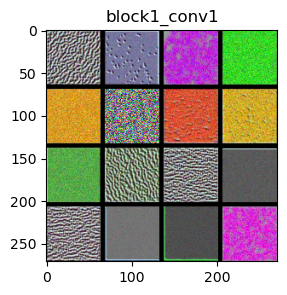
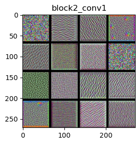
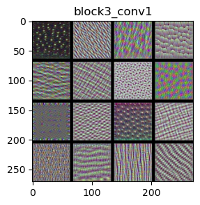
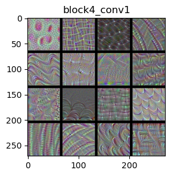
The filters in the ConvNet get increasingly complex and refined as you go higher in the model:
block1_conv1 and block2_conv1: Filters in these layers detect simple features like edges and basic colors. They also start to recognize simple textures, which are combinations of edges and colors. Think of these filters as seeing the outlines of shapes, basic color patches, or simple patterns such as stripes or dots.
block3_conv1 and block4_conv1: Filters in these layers become more sophisticated. They start to recognize complex textures and parts of objects found in natural images, such as waves, leaves, and eyes.
Visualizing filters helps us understand how each layer in the VGG16 model contributes to recognizing and classifying images. As the layers go deeper, the filters get better at recognizing more complex and detailed features. This layered approach allows the model to build up from simple shapes and colors to understanding detailed and specific parts of an image.
By using gradient descent to maximize the response of a specific filter, starting from a blank input image, we can see what each filter is looking for and how it contributes to the model’s ability to recognize objects. This process is crucial for improving the model and making it more accurate in recognizing and classifying images.
Heatmaps of Class Activation
The technique used for understanding which parts of a given image led a convnet to its final classification decision is called Class Activation Map (CAM) visualization.
A class activation heatmap is a matrix of scores associated with a specific output class. Let’s use the VGG16 model and an elephant picture as an example. The final convolutional layer in VGG16 is called block5_conv3 and has an output shape of (None, 14, 14, 512), which consists of 512 14x14 filter images.
where weight indicates how important each filter is with regard to the elephant class. Technically speaking, it is related to the gradient of the elephant class with respect to the output of the layer block5_conv3.
Given an image fed into VGG16, CAM visualization overlays the heatmap on the image and shows how important each location in the image is with respect to the class under consideration.
The following code block contains functions that generate heatmaps and display the class activation map:
Code
def make_gradcam_heatmap(model, img_path, pred_index=None):import tensorflow as tf last_conv_layer_name = [layer for layer in model.layers if'conv'in layer.name][-1].name# First, we create a model that maps the input image to the activations# of the last conv layer as well as the output predictions grad_model = tf.keras.models.Model( model.inputs, [model.get_layer(last_conv_layer_name).output, model.output] ) img = load_img(img_path, target_size=model.layers[0].output.shape[1:3]) img_array = preprocess_input(np.expand_dims(img_to_array(img), axis=0))# Then, we compute the gradient of the top predicted class for our input image# with respect to the activations of the last conv layerwith tf.GradientTape() as tape: last_conv_layer_output, preds = grad_model(img_array)if pred_index isNone: pred_index = tf.argmax(preds[0]) class_channel = preds[:, pred_index]# This is the gradient of the output neuron (top predicted or chosen)# with regard to the output feature map of the last conv layer grads = tape.gradient(class_channel, last_conv_layer_output)# This is a vector where each entry is the mean intensity of the gradient# over a specific feature map channel pooled_grads = tf.reduce_mean(grads, axis=(0, 1, 2))# We multiply each channel in the feature map array# by "how important this channel is" with regard to the top predicted class# then sum all the channels to obtain the heatmap class activation last_conv_layer_output = last_conv_layer_output[0] heatmap = last_conv_layer_output @ pooled_grads[..., tf.newaxis] heatmap = tf.squeeze(heatmap)# For visualization purpose, we will also normalize the heatmap between 0 & 1 heatmap = tf.maximum(heatmap, 0) / tf.math.reduce_max(heatmap)return heatmap.numpy()def display_gradcam(heatmap, img_path, alpha=0.4):from matplotlib.pyplot import get_cmap# Load the original image img = load_img(img_path) img_array = img_to_array(img) # Rescale heatmap to a range 0-255 heatmap = np.uint8(255* heatmap)# Use jet colormap to colorize heatmap jet = get_cmap("jet")# Use RGB values of the colormap jet_colors = jet(np.arange(256))[:, :3] jet_heatmap = jet_colors[heatmap]# Create an image with RGB colorized heatmap jet_heatmap = array_to_img(jet_heatmap) jet_heatmap = jet_heatmap.resize((img_array.shape[1], img_array.shape[0])) jet_heatmap = img_to_array(jet_heatmap)# Superimpose the heatmap on original image superimposed_img = jet_heatmap * alpha + img_array superimposed_img = array_to_img(superimposed_img)# Display Grad CAM#plt.matshow(deprocess_image(superimposed_img)) plt.imshow(superimposed_img) plt.show()
The code below uses the VGG16 model on an elephant picture. You can make simple modifications to use the Xception model or a picture of a cat and dog. By changing the pred_index value (the default is None, indicating the predicted class), you can view the class activation map for a specific class.
Code
model = VGG16(weights='imagenet')from keras.applications.vgg16 import preprocess_input, decode_predictions# model = xception.Xception(weights='imagenet')# from keras.applications.xception import preprocess_input, decode_predictionsimg_path = get_file(origin=os.path.join(base_url, 'figure/african_elephant.jpg'))# img_path = get_file(origin=base+'figures/cat_and_dog.jpg') plt.imshow(load_img(img_path))plt.show()img = load_img(img_path, target_size=model.layers[0].output.shape[1:3])img_array = preprocess_input(np.expand_dims(img_to_array(img), axis=0))preds = model.predict(img_array, verbose=0) # with shape (1, 1000)# print('argmax(preds):', np.argmax(preds[0]))# print('Preds index', (-preds[0]).argsort()[:3])print('Prediction:')display([(c1, c2) for (c0, c1, c2) in decode_predictions(preds, top=3)[0]])
We present the image along with the top 3 predicted categories and the probability that the image belongs to each category.
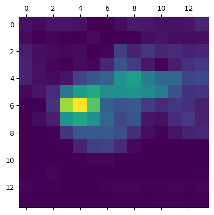
(a) class activation heatmap
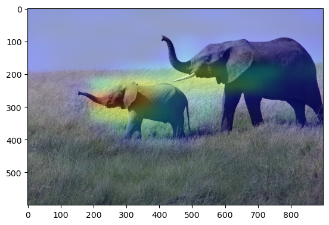
(b) superimposing the class activation heatmap on the original picture
Figure 6: CAM
For instance, the CAM visualization shows that the Xception model predicts the cat and dog as the top two classes, while VGG16 fails to predict the cat class.
Introduction to Computer Vision
Computer vision is an interdisciplinary field that deals with how computers can be made to gain a high-level understanding of digital images or videos. There are several levels of granularity in which computers can understand images.
Image classification: This is the most fundamental building block in computer vision. Given an image, the computer outputs a label, which identifies the main object in the image. We have demonstrated image classification with examples such as MNIST and Dogs vs. Cats.
Classification with Localization: The computer not only outputs the classification label but also localizes where the object is present in the image by drawing a bounding box around it.
Object Detection: Object detection extends localization to the images containing multiple objects. The task is to classify and localize all the objects in the image.
Semantic Segmentation: It is a pixel-level image classification. The expected output is a high resolution image in which each pixel is classified to a particular class.
Instance segmentation: It is one step ahead of semantic segmentation, wherein the computer classifies each instance of a class separately along with pixel-level classification.
The figure below shows their connections and differences.
Applications
Autonomous vehicles
Autonomous driving is a complex robotics tasks that requires perception, planning and execution within constantly evolving environments. This task also needs to be performed with utmost precision, since safety is of paramount importance. Semantic Segmentation provides information about free space on the roads, as well as to detect lane markings and traffic signs.
Bio Medical Image Diagnosis
Machines can augment analysis performed by radiologists, greatly reducing the time required to run diagnostic tests.
U-Net
The U-Net is a powerful encoder-decoder convolutional neural network architecture for semantic segmentation.
a specific convolutional network architecture used for semantic segmentation, and it is also used in the stable diffusion model.